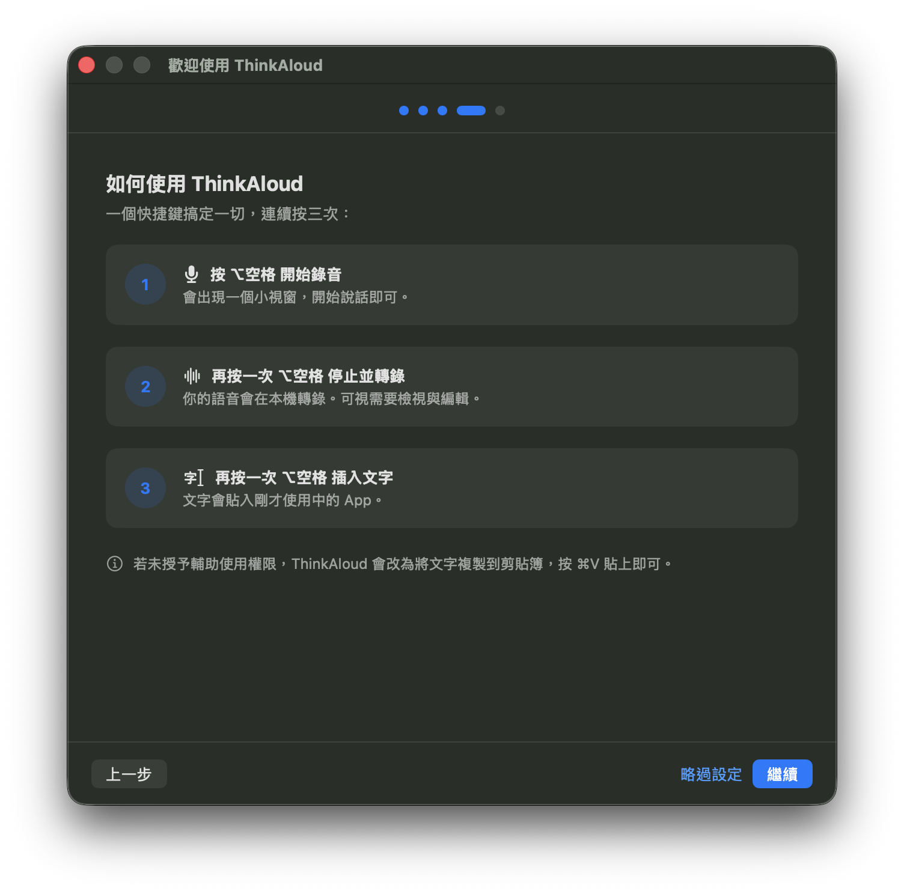
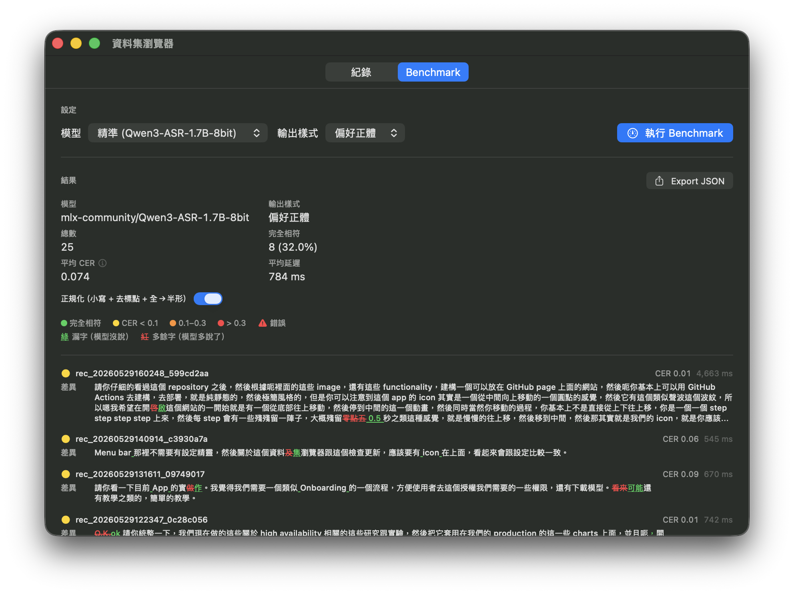

Talk. It’s typed.
Turns your voice into text in any Mac app - transcribed on-device, edited if you like, then dropped right where your cursor is.
No cloud. No account. The model runs on your Mac, and your audio never leaves it.
The flow
One key does the whole thing
Press ⌥Space to record. Press it again to stop and transcribe — words stream into a preview you can fix. Press once more to insert.

Beyond dictation
Quietly, an ASR studio
Keep your dictations as a labeled dataset. Edit transcripts, pit models against each other on your own audio, and push the whole set to Hugging Face when you’re ready.

Runs SOTA models through Apple MLX — pick a model that fits your Mac, from fast and light to most accurate.